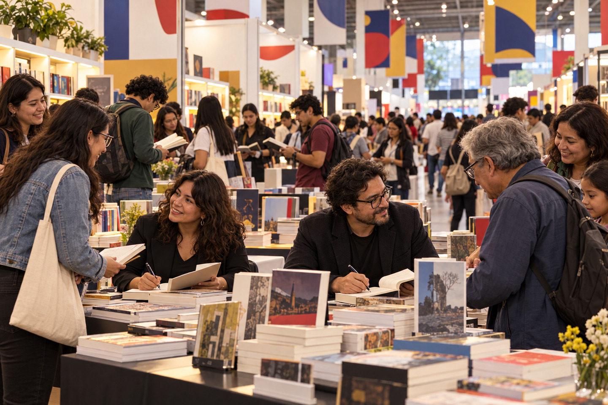
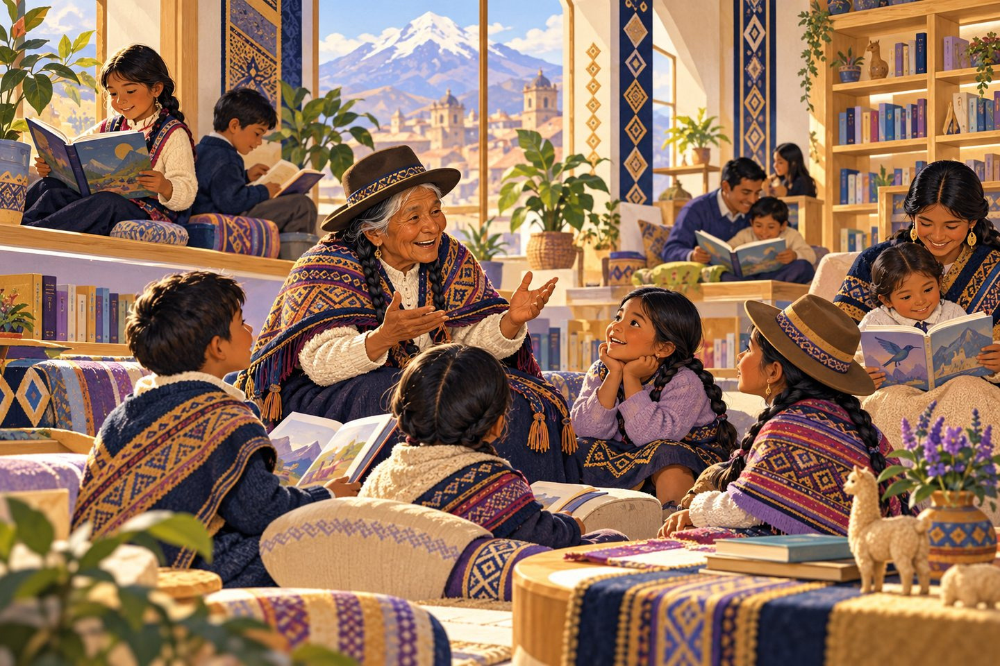
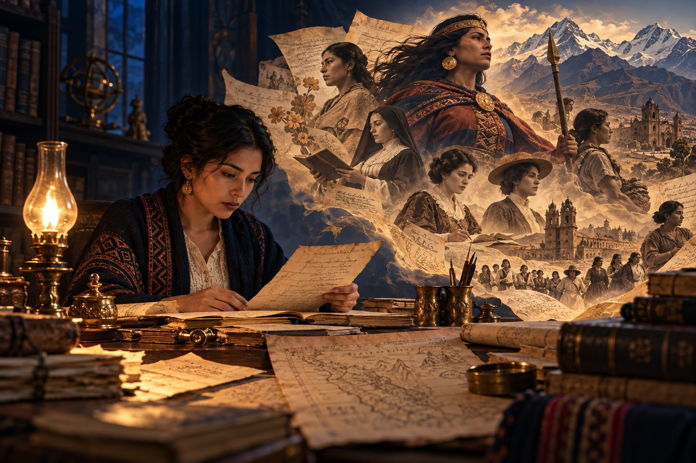

Volver la mirada a casa: autores que abren caminos de lectura en el Perú
En el mes de la patria, leer también puede ser una forma de reconocer el país: sus voces, sus lenguas, sus preguntas y las memorias que todavía buscan ser contadas.
Hay países que aprendemos en los mapas y otros que empezamos a comprender cuando una historia nos toma de la mano. El Perú cabe en ambos: en su costa, sierra y selva, pero también en la voz de una abuela, en una palabra quechua, en una familia que pregunta de dónde viene y en un niño que descubre que leer no es repetir una lección, sino reconocerse.
Por eso, en julio queremos mirar hacia nuestra propia casa. No para construir una lista cerrada de “grandes nombres”, sino para acercarnos a distintas puertas de entrada a la literatura peruana.
La infancia: amabilidad, música y curiosidad
Andrea y Claudia Paz, conocidas junto con Cristóbal Paz como los Hermanos Paz, han creado libros, canciones y personajes para primeros lectores. En la colección Seamos Amables, animales entrañables convierten gestos cotidianos —saludar, compartir, pedir por favor o perdón— en pequeñas aventuras. Su propuesta no separa el libro de la voz ni del juego: algunos encuentros incluyen narración, música y participación infantil.
Esa mezcla importa. Un niño puede llegar a la lectura por una ilustración, un estribillo, una risa o un personaje que quiere volver a ver. El libro no tiene que presentarse como examen; puede presentarse como casa.
Cuando una historia llega cantando, jugando o hablando la lengua del hogar, la lectura deja de parecer una puerta cerrada.
Comentario JUFANTICS

Escribir, enseñar y conversar con los lectores
Alonso Cueto une la narrativa con la docencia. Autor de La hora azul y muchas otras obras, participa en la FIL Lima, dirige talleres y conversa sobre los recursos con los que una historia se construye. Su trayectoria recuerda que fomentar la lectura no consiste solo en recomendar títulos: también es enseñar a mirar cómo están hechos y permitir que un lector se imagine a sí mismo como autor.
Jhemy Tineo, nacido en Moyobamba y formado en Lengua y Literatura y Escritura Creativa, ganó el Premio José Watanabe Varas 2021 en cuento por Los sacrificios de la carne. Su presencia amplía el mapa literario más allá de los nombres repetidos y confirma que en las regiones también se escriben relatos capaces de renovar la conversación nacional.
Y en la poesía bilingüe de Nora Alarcón, el quechua no aparece como pieza de museo, sino como lengua viva. Obras como Pacha achikllaq / Aurora del tiempo y el poemario infantil Canta un zapallo en mi jardín / Jawinkam muyaypi takin enlazan memoria, música, aprendizaje y territorio. Leer en una lengua originaria es también escuchar una manera propia de ordenar el mundo.
Memoria personal, historia del país
La historiadora cusqueña Claudia Núñez recupera en La Mariscala (2022) la figura de Francisca Zubiaga y Bernales. El libro revisa la imagen de “loca” o “excéntrica” con que la historia tradicional la redujo y reconstruye su poder político junto a Agustín Gamarra; además, devuelve voz a chicheras, monjas y revolucionarias. Leerla es preguntarnos quién contó el pasado y a quién dejó fuera.
En Dejarás la tierra (2017), Renato Cisneros sigue otra clase de archivo: el de su propia familia. La búsqueda de Nicolasa Cisneros y su relación con el sacerdote Gregorio Cartagena, en los años de la Independencia, convierte una genealogía íntima en una exploración sobre apellido, clase, culpa y país. A veces la historia nacional no entra por la puerta principal; aparece en una tumba, una carta o un secreto heredado.

Dos voces actuales para seguir de cerca
J. J. Maldonado publicó en 2025 E-mails con Roberto Bolaño, un conjunto de relatos que juega con escritores reales convertidos en personajes y combina sátira, autoficción, parodia y cultura contemporánea. Stuart Flores, de Huancayo, publicó ese mismo año Preludio a los delirios de un joven pianista sin cabeza, una novela extensa y ambiciosa que cruza distopía, reflexión ética, política y creación artística.
Son libros distintos, pero comparten una invitación: salir de los anaqueles más visibles y mirar qué se está escribiendo ahora. Un país literario permanece vivo cuando seguimos descubriendo voces, incluso antes de que el mercado las convierta en nombres familiares.
Leer el Perú es permitir que muchas voces —antiguas, nuevas, cercanas, regionales y bilingües— conversen en la misma mesa.
Comentario JUFANTICSEn este mes de la patria, quizá podamos elegir un libro peruano, leer un fragmento en familia y preguntar: ¿qué parte de nuestro país vive aquí? Tal vez la respuesta sea una montaña, una ciudad, una herida, una canción o la voz de alguien que llevaba demasiado tiempo esperando ser escuchado.
JUFANTICS — La imaginación cobra vida.